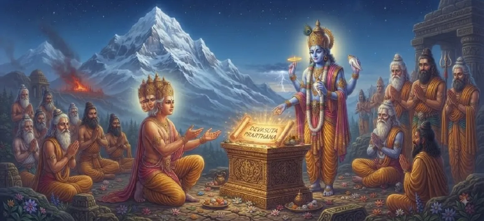

The Need for a Divine Son
The fifth chapter of the Kumara Khanda delves deeply into the grand cosmic strategy required to restore universal order. With Tārakāsura reigning supreme and protected by Brahma's formidable boon, the divine assembly recognizes that physical force alone is useless.
The survival of the cosmos hinges on a miraculous event: the birth of a supreme commander born directly from the energies of Lord Shiva and Goddess Pārvatī.
Chapter 5 Highlights
Cosmic Strategy
Analyzing the loophole in Tārakāsura's boon.
Union of Shiva-Shakti
Merging supreme asceticism with divine energy.
Role of Pārvatī
The divine mother destined to awaken the Lord.
Only Solution
Why a divine son is the sole key to victory.
Future Commander
Planning for the leader of the celestial armies.
Divine Decree
Aligning cosmic forces to fulfill the prophecy.
Core Topics in This Chapter
- 01Analyzing the Inescapable Terms of Brahma's Boon→
- 02The Cosmic Necessity of Lord Shiva’s Progeny→
- 03The Integral Role of Goddess Pārvatī (Shakti)→
- 04Overcoming the Eternal Asceticism of Mahadev→
- 05The Grand Plan of the Gods and Sages→
- 06Kindling the Flame of Universal Hope→
- 07Transition to Chapter 6 (Shiva and Pārvatī in Divine Union)→
Analyzing the Inescapable Terms of Brahma's Boon
The gods carefully review the parameters of the boon granted to Tārakāsura. Since he cannot be killed by any god, demon, or ordinary human, conventional warfare is rendered entirely futile.
Every alternative military strategy is weighed and found wanting.
The Cosmic Necessity of Lord Shiva’s Progeny
The collective assembly realizes that the only entity capable of piercing Tārakāsura’s invincibility is a warrior born directly from the supreme seed and energy of Lord Shiva.
This child will embody the combined might of destruction and preservation.
The Integral Role of Goddess Pārvatī (Shakti)
For this divine birth to take place, the supreme ascetic consciousness must unite with supreme dynamic energy. Goddess Pārvatī, the daughter of the Himalayas and incarnation of Sati, is recognized as the destined consort.
Her devotion alone can draw Lord Shiva out of eternal meditation.
Overcoming the Eternal Asceticism of Mahadev
Lord Shiva is perpetually detached, absorbed in yoga on Mount Kailash. The challenge before the universe is not just creating a child, but inspiring the supreme ascetic to embrace household life and fatherhood for the sake of cosmic dharma.
This requires a profound divine orchestration.
The Grand Plan of the Gods and Sages
Under the guidance of Brahma and Vishnu, the gods and sages formulate a careful plan to assist Pārvatī in her penance and set the wheels of divine matrimony in motion.
Every celestial force coordinates to support this sacred mission.
Kindling the Flame of Universal Hope
As the purpose of a divine son becomes crystal clear to all celestial beings, despair gives way to renewed hope. The universe prepares for the monumental union that will change its destiny.
The stage is prepared for the unfolding of divine romance and marriage.
Transition to Chapter 6 (Shiva and Pārvatī in Divine Union)
Having established the absolute necessity of a divine son, the narrative transitions to the magnificent chapter detailing the union of Lord Shiva and Goddess Pārvatī.
The next chapter unveils the sacred marriage that alters the cosmic balance.
Key Teachings of Chapter 5
Cosmic Necessity
Every crisis has a precise, destined solution.
Shiva-Shakti Synergy
Creation requires both consciousness and energy.
Power of Devotion
Pārvatī's tapas melts the ascetic heart of Shiva.
Purposeful Action
Aligning actions with higher divine order.
Hope in Darkness
Understanding the cure paves the way for victory.
Divine Planning
Cosmic laws orchestrate ultimate righteousness.
Spiritual Reflection
The need for a divine son teaches us that true transformation in the universe happens when static consciousness (Shiva) merges with active divine energy (Shakti). Overcoming our greatest obstacles requires the harmonious blending of inner peace and purposeful action.
Living the Message of Chapter 5
Recognize that solving complex problems requires addressing their root cause rather than treating symptoms.
Cultivate both inner stillness and dynamic energy to achieve your highest goals.
Trust in the higher purpose behind life's necessary transitions and unions.
Key Spiritual Concepts
The metaphysical truth behind the necessity of a divine progeny.
The inseparable unity of Lord Shiva and Goddess Pārvatī.
The exclusive tactical solution formulated to vanquish Tārakāsura.
The sacred cosmic marriage bridging asceticism and household life.
The creation of the supreme celestial commander for cosmic defense.
The ultimate preservation of universal righteousness and cosmic order.
Chapter Summary
Kumara Khanda Chapter 5 elucidates the cosmic necessity of a divine son born of Lord Shiva and Goddess Pārvatī as the sole means to overcome Tārakāsura's invincible boon and restore universal harmony.
Frequently Asked Questions
1. What is the primary focus of Kumara Khanda Chapter 5?
Chapter 5 focuses on explaining the deep cosmic reasons and necessity behind why a divine son must be born to Lord Shiva to vanquish Tārakāsura.
2. Why couldn't any regular warrior defeat Tārakāsura?
Due to Lord Brahma's boon, Tārakāsura was immune to defeat by all ordinary gods, demons, and humans, leaving a loophole only for a direct son of Lord Shiva.
3. What role does goddess Pārvatī play in this context?
Goddess Pārvatī, the embodiment of divine energy (Shakti) and reincarnation of Sati, is destined to unite with Lord Shiva to manifest this miraculous divine child.
4. What is the next chapter after Chapter 5?
The next chapter is titled 'Shiva and Pārvatī in Divine Union'.
“When static consciousness meets dynamic grace, the universe gives birth to the supreme power capable of vanquishing the darkest tyranny.”
Continue Through Kumara Khanda
Chapter 5 explores the need for a divine son. Continue to the next chapter, Shiva and Pārvatī in Divine Union.